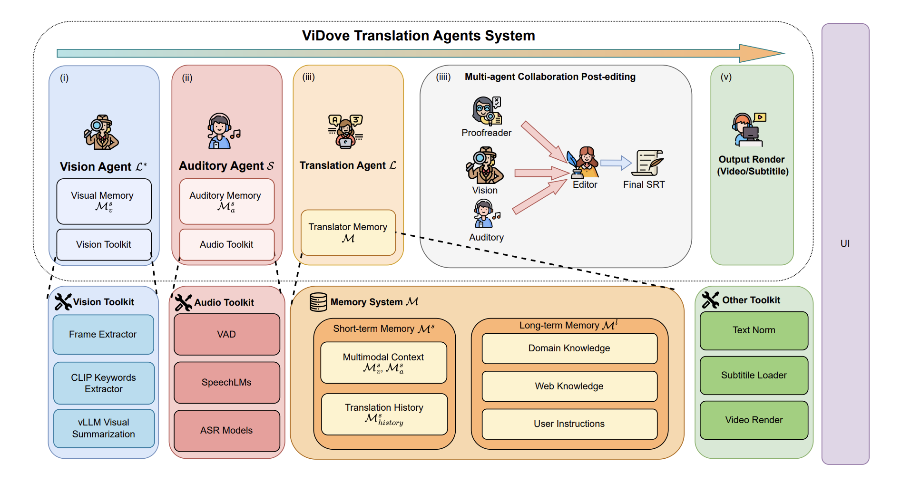
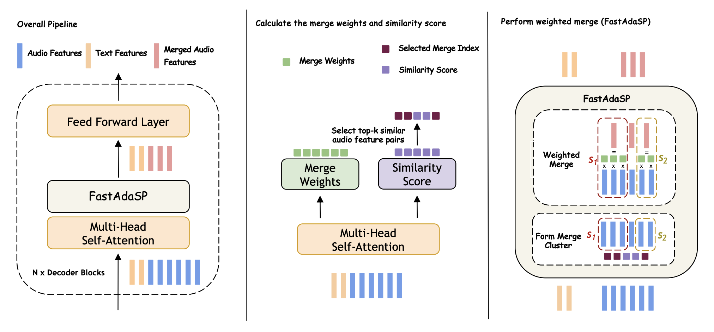
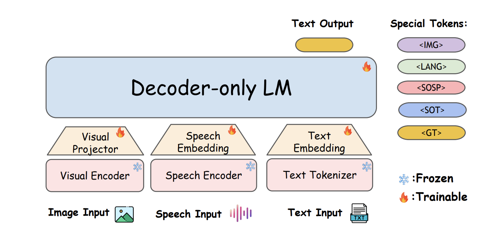
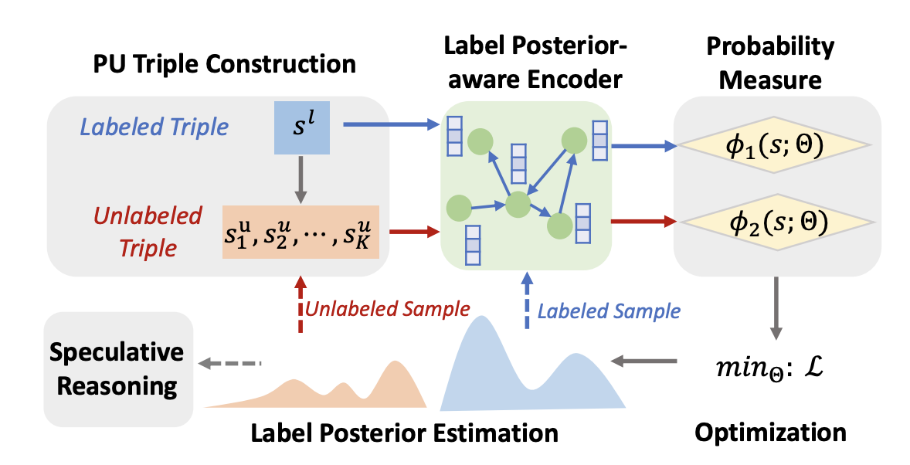

Index
Nine entries
Publications
For the most complete and up-to-date list, see my Google Scholar profile. A cobalt rule marks first-author work.
Archive
2023—25
2025
01

02
03
2024
04

05

SynesLM: A Unified Approach for Audio-visual Speech Recognition and Translation
Interspeech 2024 Workshop
07
Under Review
08
Speech-DRAME: A Framework for Human-Aligned Benchmarks in Speech Role-Play
Under Review
2023
09

Noisy Positive-Unlabeled Learning with Self-Training for Knowledge Graph Completion
ACL 2023 Findings